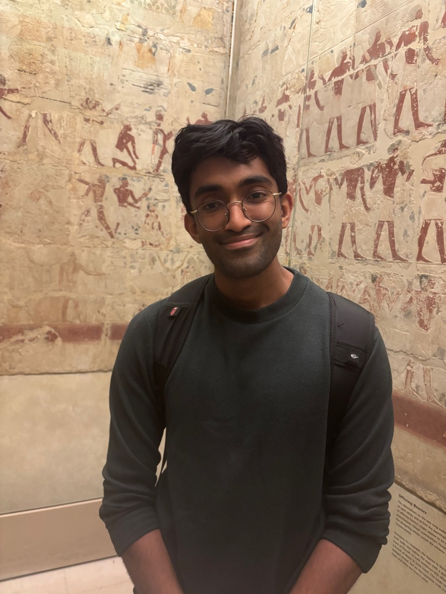

Shankar Padmanabhan
My research focuses on how different stages of training (e.g., pretraining, midtraining, post-training, finetuning) interact with each other.
I'm a third year PhD student at Cornell University, co-advised by Prof. Tanya Goyal and Pratyush Maini, and a Research Fellow at DatologyAI. I'm gratefully supported by an NSF GRFP Fellowship.
I'm also deeply motivated by empirically grounded research that helps us understand language models better; scaling laws, physics of LMs, and the broader science of deep learning.
I obtained my undergraduate degree in Mathematics at UT Austin, where I was first introduced to NLP. I was fortunate to work with Prof. Eunsol Choi, Prof. Greg Durrett, and Prof. Richard Tsai.
Research
Training science
How does pretraining shape downstream behaviors? How should we structure pretraining, midtraining, etc. to obtain a model that is a) maximally amenable to post-training, b) robust to forgetting, and c) contains all of the desired capabilities? When do different data sources, or capabilities, transfer to each other and in what ways? How do different stages of training relate to each other?
Continual learning
Language models are increasingly used as substitutes for search, yet they remain static snapshots of their training data and are prone to hallucination. How can we teach them new information or skills while preserving what they already know? Further, how can we leverage their existing capabilities to improve sample efficiency for new material?
Evaluation
Language models are growing increasingly strong, but they remain fragile and imperfect in many ways. Benchmarks and evaluation will always need to co-evolve with model capabilities, because hill climbing on one set of benchmarks does not always result in a model that is as strong as those metrics would imply. I especially enjoy playing with the latest frontier models and discovering real flaws they have that may impact uses in the wild.
Papers
- 2026Updating Parametric Knowledge with Context Distillation Retains Post-Training CapabilitiesICML 2026 · Spotlight (top 2.2%)
- 2025Breadcrumbs Reasoning: Memory-Efficient Reasoning with Compression BeaconsNeurIPS Workshop on Efficient Reasoning, 2025
- 2023
- 2023
- 2021
Contact
Open to collaborations and conversations about research. Also happy to chat with any high schooler/undergrad/MS student if I can be of help in any way (e.g., advice about attending grad school). The best way to reach me is shankar.padmanabhan03@gmail.com.